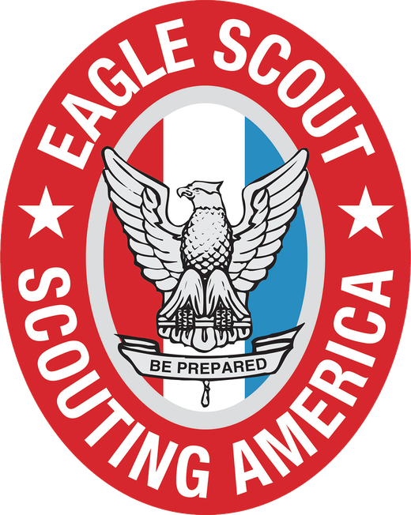
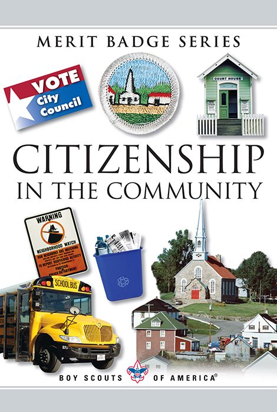
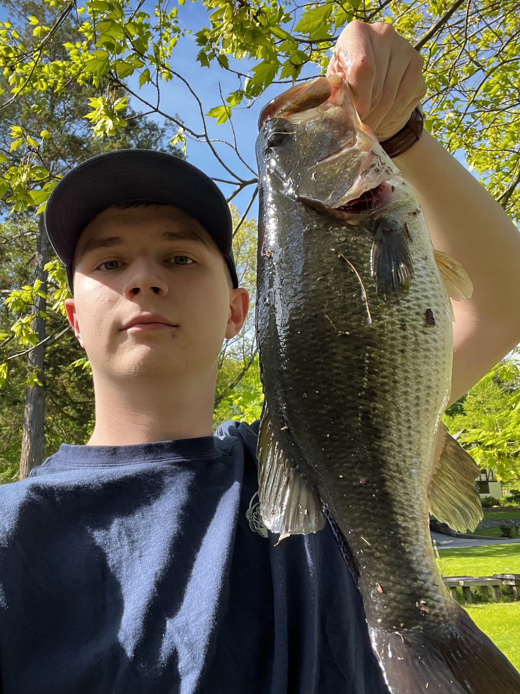
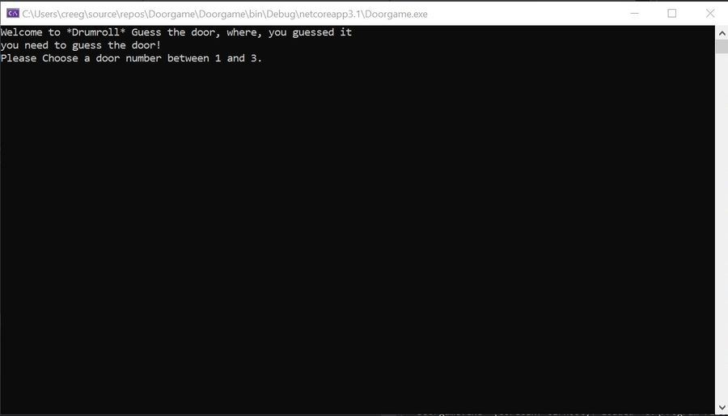
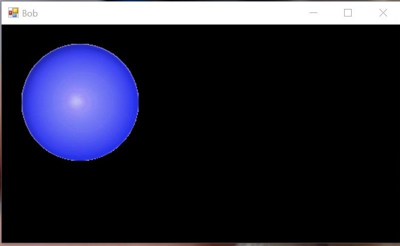

Paul
Creegan
Eagle Scout at fourteen.
I spent seven years as a Cub Scout and Boy Scout, and reached Eagle Scout — the highest rank — at 14. The rank requires 21 merit badges: 13 of them mandatory, 8 of my own choosing. I kept going and finished with 41, including four Eagle palms.
My favorites were Citizenship in the Community, because it's about being useful to the people around you, and Fishing, which I already did every summer.
Earning a badge meant completing the workbook and a worksheet, then demonstrating the skill to a counselor who is proficient in that field. My father is an Assistant Scout Master and counsels the Law badge, among others.


Fishing Enthusiast
I have been a fishing enthusiast from a young age, and even turned my enthusiasm for fishing into my first job. I mostly fish for bass, trout, and panfish. I started working at 13 as a Fishing Specialist at Breezemont Day Camp. My first year there I revitalized the fishing program to help generate more interest with the kids. My second year there they built a second dock for the explosive interest in fishing. After Breezemont I worked at Kiwi Country Day Camp as the Fishing Specialist.

Cybersecurity club president.
I joined the Fordham Prep cybersecurity club as a freshman, co-presided as a sophomore, and took over as president. Under my leadership the club competed for the first time in six years — two teams in the National Cyber League.
Meetings range from discussions, to live demonstrations with my own tooling, to guest speakers from the industry. HackTheBox competitions are next on the calendar.
The goal is to pass on the same obsession I have for this field.
Languages, in the order they stuck.
C#
The first language I really learned. I started with console applications and moved to WinForms. The best way to learn is to build something, so I built BOB.

BOB is my personal assistant — fully customized to what I actually need, and the best thing I'd built at the time. He was my introduction to WinForms.

Everything after
I learned Python to get better at reading scripts for cybersecurity, and it became one of my favorites. Java came through AP Computer Science A. Everything else lives on my GitHub.
github.com/paul10510Ultima IV — Fordham Prep mod
I built a mod for Ultima IV that replaces the city of Yew with Fordham Prep, my high school. Unzip it and drop the two files into your game directory.
Get in touch.
4AfWqT3ivzPTkuHRfFPSMSLus7H1p5zdciLUE9mfms43hAKdYiZG7vMcAF8JMHYvLNPeHkfGTsrinfbgrLJzDTRmJehYdPR